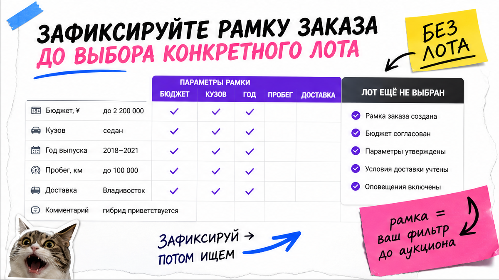
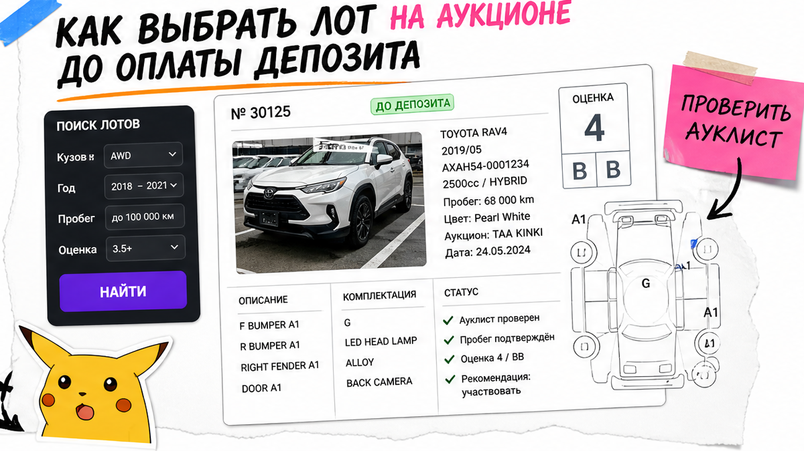
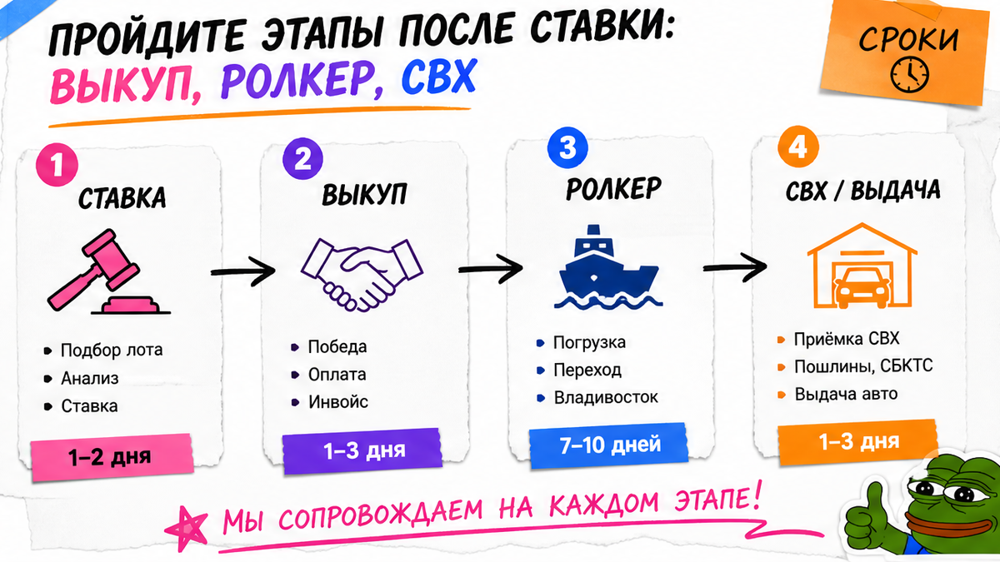

Игорь из Новосибирска увидел в Telegram "Camry под ключ за миллион", внёс депозит "чтобы не ушла" – а в смете не оказалось утильсбора под его мощность, да и месяц выпуска был на грани непроходного. Знакомо? Заказ авто из Японии под ключ в 2026 – это не "кнопка купить", а цепочка: лот → выкуп → ролкер → СВХ Владивосток → растаможка → СБКТС/ЭПТС → выдача. Ниже соберёте карту сделки и чек-лист до первой оплаты, без расчёта пошлин "с потолка".
TL;DR / Быстрый инсайт: Прямого доступа частника к японскому аукциону нет – нужен брокер с аккаунтом. Главный сюрприз сметы часто не цена лота, а связка утильсбор + мощность двигателя и дата выпуска по кузову (год в ауклисте ≠ выпуск для таможни). Депозит – только после перевода листа, подтверждения месяца выпуска, лимита ставки и состава "под ключ" в договоре. Персональный расчёт – в каталоге, не в чужом скрине.
Мы в Авто-Сейлс во Владивостоке видим одну сцену: человек впервые открывает аукционный лист и думает, что это "только для перекупов". На практике это словарь плюс дисциплина до денег.

Пока нет бюджета "под ключ", региона получения, типа руля и коридора возраста – любой красивый скрин лота давит на эмоции. Сначала рамка, потом аукцион.
Делать: держать рамку на одной странице заметок. Не делать: бронировать "пограничный" год без проверки месяца выпуска – типичная ошибка новичков, которые смотрят только год в ауклисте.

Аукционный лист (ауклист) – карточка осмотра площадки: оценки кузова/салона, дефекты, иногда R/RA. На пальцах: балл "4" или "4.5" – ориентир живой машины, но не зелёный свет без карты повреждений. R – сигнал серьёзного ремонта несущих; RA – восстановление или меньший инцидент. Читайте карту дефектов, не только цифру сверху.
Сюрприз 2026: у частника из РФ нет прямого входа на USS, TAA, JU и соседние сети – торги идут через брокера. Например, "просто открыть аукцион" из дома не работает: нужны посредник, перевод листа и лимит ставки.
Делать: требовать лист + месяц выпуска + лимит ставки до оплаты. Не делать: вносить депозит по красивому скрину без перевода ауклиста.
| Критерий | Заказ с аукциона JP | "Со склада" во Владивостоке |
|---|---|---|
| Когда видите машину | Сначала лист и торги, авто ещё в Японии | Уже в порту/на площадке, выбор уже сужен |
| Гибкость по модели | Шире: лоты каждый день на сетях аукционов | Уже привезённые позиции |
| Риск новичка | Депозит и ставка без чтения листа | Купить "быстро", не сверив смету и документы |
| Срок до выдачи | Ориентир у практиков 3–8 недель после выигрыша | Короче, если авто уже прошло часть пути |
Итоговый вердикт: Если нужен конкретный год/комплектация и готовы ждать логистику – идите в аукцион через посредника с чек-листом до депозита. Если важна скорость и готовы к узкому выбору – смотрите склад во Владивостоке, но смету "под ключ" проверяйте так же жёстко.

После выигрыша начинается не "уже можно ехать", а логистика:
Схема под ключ:
Лот и лимит ставки → Выкуп и инвойс → Порт Японии → Ролкер (морской паром для машин) → СВХ Владивосток → Растаможка → СБКТС → ЭПТС → Выдача или отправка по РФ
Ролкер – судно, на которое машины заезжают своим ходом. СВХ – склад временного хранения у таможни, пока идут декларация и платежи. На практике растаможка при корректных документах – несколько рабочих дней; простой на СВХ удорожает сделку.
Делать: закладывать полный цикл документов после порта. Не делать: планировать поездку "на завтра после прихода судна" – типичная ошибка ожидания сроков.
Слово "под ключ" в договоре – список статей. Готовые суммы пошлин и утильсбора здесь не публикуем: с 2026 утильсбор индексировали, методика учитывает и мощность. Чужой "фиксированный" расчёт из чата – не ваш.
Проверьте, что в смете по строкам понятны:
Персональный расчёт под ваш лот – в каталоге avto-sales125.ru. Форм на странице нет: цифры живут в каталоге и переписке.
Делать: требовать смету по статьям до депозита. Не делать: верить скрину "как у соседа" без мощности, месяца выпуска и состава услуг.
Перед оплатой пробегитесь по списку. Если "нет" больше двух пунктов – тормозите сделку.
Критерий результата: чек-лист заполнен, этапы от лота до выдачи названы, путь к персональному расчёту ясен – без угадывания пошлин по чужим скринам. Детали заказа – в Telegram @avtosales125.
Делать: идти по чеклисту сверху вниз до перевода. Не делать: оплачивать "чтобы не ушла", пока лист и смета не закрыты.
Подбор и расчёт под ваш бюджет – в каталоге Авто-Сейлс. Без форм на странице и без оплаты вслепую.
Материал проверен: Редакция Авто-Сейлс (эксперты по авто под заказ из Японии, Кореи и Китая).
Достоверность: этапы сверены с открытыми разборами заказа с японского аукциона, практикой растаможки во Владивостоке и гайдами по СБКТС/ЭПТС; персональные расчёты – в каталоге на дату обращения.
Прямого доступа частника к японскому аукциону в 2026 обычно нет – нужен брокер. Даже при минимуме участия: перевод листа, смета по статьям и договор до депозита либо подбор команде до первой оплаты.
Считайте цепочку: лот → депозит и торги → выкуп → ролкер → СВХ Владивосток → растаможка → СБКТС → ЭПТС → выдача. Ориентир у практиков – 3–8 недель после выигрыша при нормальных документах.
С аукциона выбор шире, но вы ждёте море и таможню. Со склада срок короче, зато выбор уже сужен. В обоих случаях до оплаты проверяйте смету и документы, не только фото.
Запросите перевод листа, оценки и карту дефектов, уточните дату выпуска. Стоп-сигналы: R/RA без объяснения, силовые повреждения, оплата без листа. Нет перевода – нет депозита.
Утильсбор зависит от возраста, мощности и статуса покупателя; в 2026 правила индексировали. Берите персональный расчёт в каталоге под ваш лот – не копируйте сумму из чужого чата.
После СВХ и выпуска ещё оформляют СБКТС и ЭПТС. Планируйте выдачу, когда цепочка закрыта: "судно пришло" не равно "можно на номера".
Передайте подбор до депозита. В Авто-Сейлс старт – каталог и Telegram @avtosales125: рамка бюджета, проверка кандидата и смета без оплаты вслепую.